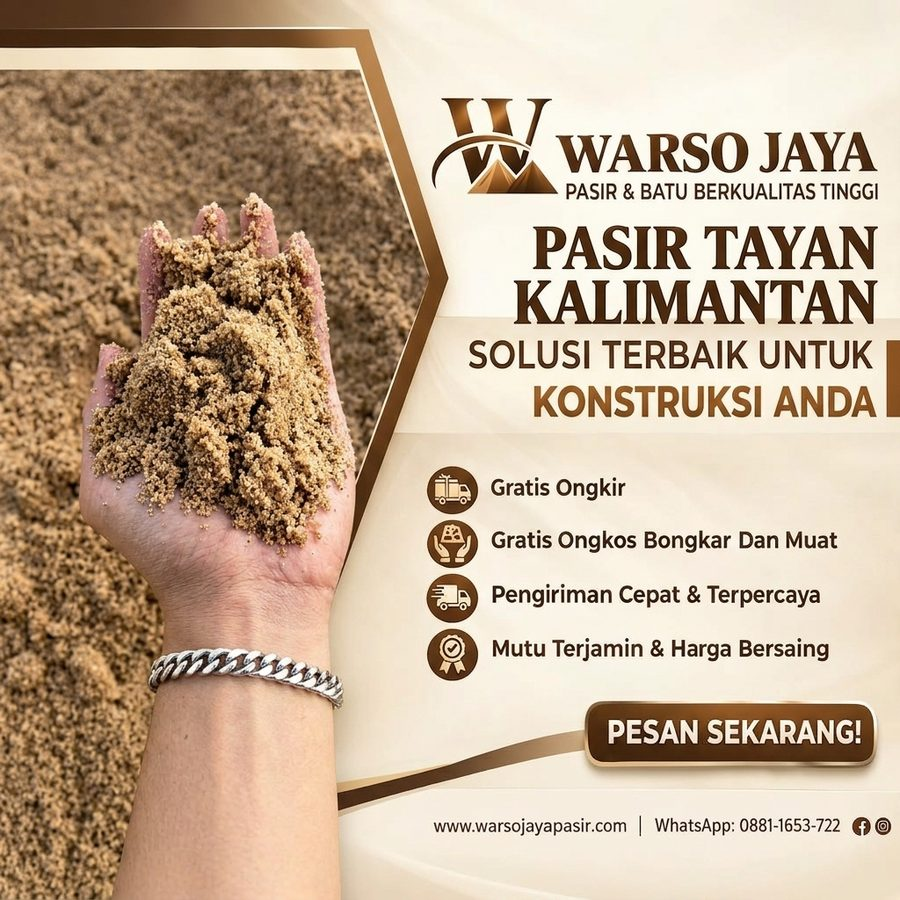

Jual Pasir Tayan Kalimantan di Jabodetabek
Pasir asal Tayan, Kalimantan, untuk kebutuhan konstruksi.

Pasir Tayan Kalimantan
Pasir Tayan Kalimantan untuk kebutuhan konstruksi. Tanyakan ketersediaan dan pengiriman.
| Kategori | Pasir Cor & Bangunan |
|---|---|
| Karakter | Sedang |
| Kegunaan umum | Konstruksi umum |
| Satuan harga | Colt Diesel 6,1 m³ |
| Area kirim | Tangerang, Jakarta, Depok, Bogor, Bekasi |
Harga dapat berubah mengikuti stok dan lokasi pengiriman. Konfirmasi lewat WhatsApp sebelum memesan.
Jual Pasir Tayan Kalimantan di Jabodetabek
Mencari supplier Pasir Tayan Kalimantan di Jabodetabek? Warso Jaya Pasir menyediakan Pasir Tayan Kalimantan untuk kebutuhan rumah tinggal, renovasi, dan proyek di Tangerang, Jakarta, Depok, Bogor, dan Bekasi. Anda dapat melihat harga per kota pada halaman ini, lalu memesan lewat WhatsApp dengan menyebutkan jumlah rit dan lokasi pengiriman.
Apa Itu Pasir Tayan Kalimantan?
Pasir Tayan Kalimantan adalah salah satu pilihan pasir untuk kebutuhan pembangunan di katalog Warso Jaya Pasir. Pasir ini umumnya dipakai untuk pekerjaan konstruksi seperti pasangan bata, plesteran, dan campuran adukan. Karakter tiap pasir bisa berbeda antar pasokan, jadi sebutkan jenis pekerjaan Anda saat bertanya agar kami bantu pilihkan material yang sesuai.
Fungsi Utama Pasir Tayan Kalimantan
Dipakai sebagai bahan adukan untuk pasangan dinding dan plesteran.
Umumnya dapat dipakai untuk pekerjaan konstruksi, konsultasikan jenis campurannya dengan tukang atau pengawas.
Cocok untuk pembangunan rumah, renovasi, dan proyek kecil hingga menengah.
Keunggulan Membeli Pasir Tayan Kalimantan di Warso Jaya Pasir
Kami menyediakan banyak jenis pasir sehingga Anda bisa menyesuaikan dengan kebutuhan.
Harga per kota tercantum jelas dan dapat dicek kapan saja.
Material diantar ke lokasi proyek di Jabodetabek.
Tips Memakai Pasir Tayan Kalimantan
- Periksa kebersihan pasir saat truk tiba.
- Siapkan lahan penumpukan yang datar dan beralas.
- Sebutkan jenis pekerjaan agar dipilihkan pasir yang tepat.
Harga Pasir Tayan Kalimantan per Kota
| Kota Tujuan | Harga |
|---|---|
| Tangerang | Rp 2.650.000 / rit |
| Jakarta | Rp 2.700.000 / rit |
| Depok | Rp 2.700.000 / rit |
| Bogor | Rp 2.750.000 / rit |
| Bekasi | Rp 2.750.000 / rit |
Harga per rit Colt Diesel 6,1 m³, dapat berubah sewaktu-waktu. Untuk lokasi di luar kota di atas atau jumlah tertentu, tanyakan lewat WhatsApp. Anda juga bisa menghitung kebutuhan lewat kalkulator material.
Layanan Pengiriman Pasir Tayan Kalimantan ke Seluruh Jabodetabek
Material dikirim langsung ke lokasi proyek Anda. Pilih kota tujuan Anda:
Pengiriman Pasir Tayan Kalimantan ke Jakarta
Warso Jaya Pasir melayani kebutuhan Pasir Tayan Kalimantan di wilayah Jakarta untuk rumah tinggal, renovasi, maupun proyek. Wilayah meliputi: Jakarta Pusat, Jakarta Barat, Jakarta Utara, Jakarta Timur, Jakarta Selatan.
Pengiriman Pasir Tayan Kalimantan ke Tangerang
Warso Jaya Pasir melayani kebutuhan Pasir Tayan Kalimantan di wilayah Tangerang untuk rumah tinggal, renovasi, maupun proyek. Wilayah meliputi: Kota Tangerang, Kabupaten Tangerang, Kota Tangerang Selatan.
Pengiriman Pasir Tayan Kalimantan ke Bekasi
Warso Jaya Pasir melayani kebutuhan Pasir Tayan Kalimantan di wilayah Bekasi untuk rumah tinggal, renovasi, maupun proyek. Wilayah meliputi: Kota Bekasi, Kabupaten Bekasi.
Pengiriman Pasir Tayan Kalimantan ke Depok
Warso Jaya Pasir melayani kebutuhan Pasir Tayan Kalimantan di wilayah Depok untuk rumah tinggal, renovasi, maupun proyek. Wilayah meliputi: Kota Depok.
Pengiriman Pasir Tayan Kalimantan ke Bogor
Warso Jaya Pasir melayani kebutuhan Pasir Tayan Kalimantan di wilayah Bogor untuk rumah tinggal, renovasi, maupun proyek. Wilayah meliputi: Kota Bogor, Kabupaten Bogor.
Untuk titik pengiriman di luar daftar ini, silakan tanyakan terlebih dahulu agar kami bisa memastikan jangkauan dan estimasi pengirimannya.
Pertanyaan Seputar Pasir Tayan Kalimantan
Apa kegunaan Pasir Tayan Kalimantan?
Umumnya untuk pasangan bata, plesteran, dan pekerjaan konstruksi. Untuk kebutuhan spesifik seperti cor struktur, konsultasikan dengan kami.
Berapa harga Pasir Tayan Kalimantan?
Lihat tabel harga per kota di halaman ini. Harga dihitung per rit colt diesel 6,1 m³ dan dapat berubah mengikuti stok dan lokasi.
Bisakah saya memesan dalam jumlah kecil?
Tanyakan langsung lewat WhatsApp. Kami akan menginformasikan pilihan jumlah dan armada yang tersedia.
Pilihan Material Terkait
Butuh Pasir Tayan Kalimantan untuk Proyek Anda?
Hubungi Warso Jaya Pasir untuk informasi harga, ketersediaan, dan pengiriman ke lokasi Anda.